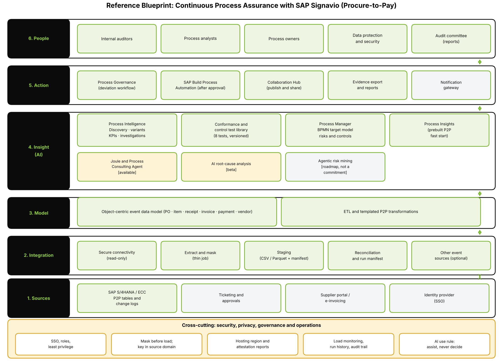

1. From periodic sampling to continuous assurance
Traditional SAP audit tests a sample once or twice a year. Four weaknesses follow: fragmented process visibility, manual evidence collection, control deviations found late and reactive risk identification. The design below tests every purchase-to-pay transaction on a schedule, keeps evidence by default, and uses AI to assist, never to decide.
Process mining shows what happened. Process intelligence adds the target model, controls, measures, workflow and people to act.
Feature status. Taken from public SAP material; confirm with the vendor. AI root-cause analysis is beta; agentic process and risk mining is roadmap, not a commitment. Neither is in the core path.
2. Reference blueprint

3. Which Signavio component does which job
| Job | Component | Status |
|---|
| Load, transform, model P2P data | Process Intelligence (ETL, templated P2P, object-centric model) | Available |
| Fast first view | Process Insights | Available |
| Target process with risks and controls | Process Manager | Available |
| Share with auditors and owners | Collaboration Hub | Available |
| Route, approve, track deviations | Process Governance | Available |
| Ask questions in plain language | Joule in the suite; Process Consulting Agent | Available (AI allowance applies) |
| Suggest drivers of a deviation | AI-assisted root-cause analysis | Beta |
| Agents that monitor and propose | Agentic process and risk mining | Roadmap |
| Corrective action after approval | SAP Build Process Automation or existing ticketing | Available, separate product |
4. Data pipeline and object-centric model


5. The eight control tests
| ID | Rule |
|---|
| BRL-01 | Payment must follow a matching purchase order, goods receipt and invoice (three-way match) within tolerance. |
| BRL-02 | An invoice must not be paid twice; same vendor, amount and reference within a window is flagged. |
| BRL-03 | The person who creates a purchase order must not approve it. |
| BRL-04 | A purchase order raised after the invoice date is an after-the-fact order and is flagged. |
| BRL-05 | Several orders to one vendor just below the approval threshold within a window are flagged as split orders. |
| BRL-06 | A change to vendor bank details shortly before a payment is flagged for review. |
| BRL-07 | A manual payment-block release is flagged unless approved by a second person. |
| BRL-08 | A price or quantity change after approval above a tolerance is flagged. |
6. Prototype storyboard (15 minutes, synthetic data)
| Step | Minute | Screen | What the audience sees | Synthetic data cue |
|---|
| 1 | 0-2 | Discover | P2P process map from requisition to payment, with volumes | 12,000 POs, 10 company codes (synthetic) |
| 2 | 2-4 | Variants | Top 10 variants; 38% follow the standard path; rework loops highlighted | Variant 1 = standard; variant 7 = invoice before PO |
| 3 | 4-6 | Conformance | Compare with target model; non-conforming cases listed | Conformance rate 71% |
| 4 | 6-9 | Control tests | Three-way match, duplicate payment, SoD, split orders, after-the-fact PO | Seeded: 140 after-the-fact POs; 23 duplicate invoices; 9 SoD conflicts |
| 5 | 9-12 | Investigate | Drill to document; AI suggests drivers (one vendor group, one plant, month-end) | Driver: plant P3 + vendor group V2 |
| 6 | 12-14 | Act | Raise deviation task; approver records cause and disposition | Task routed to process owner |
| 7 | 14-15 | Recommend | Ranked transformation ideas with effect and effort | Enforce PO-before-invoice; add approval limit |
7. Key architecture decisions
| ID | Decision | Decision rationale | Status |
|---|
| ADR-01 | Choose hosting region and confirm attestation reports before any data moves | Residency and assurance are gating; masked data lowers risk in every option | Proposed |
| ADR-02 | Use an object-centric event model for P2P | Avoids duplicated events and wrong counts; matches the many-to-many reality | Proposed |
| ADR-03 | Keep the extract thin and mask personal data before load | Smallest data and risk; key stays in source domain | Proposed |
| ADR-04 | Implement control tests as configuration in the analysis engine | Versioned, owned, auditable; no custom code | Proposed |
| ADR-05 | Use AI as assistive only; keep beta and roadmap features out of the critical path | Human decision stays; design survives feature changes | Proposed |
| ADR-06 | Start with the suite's prebuilt P2P content for the first view, then build the tailored model | Fast first insight; tailored model for control tests | Proposed |
| ADR-07 | Route remediation through the workflow component; automation only after approval | Keeps segregation of duties and an audit trail | Open |
8. Roadmap
| ID | Work package | Transition architecture | Deliverable |
|---|
| WP-01 | Mobilise, scope and hosting decision | TA0 Baseline | Charter, principles, ADR-01 hosting region |
| WP-02 | Target P2P model and control library | TA0 Baseline | Approved BPMN model; list of eight tests with owners |
| WP-03 | Extraction, masking and staging | TA1 Data in | Read-only extract, masking, run manifest |
| WP-04 | Event log and object model | TA1 Data in | Object-centric model; DQ rules live |
| WP-05 | Discovery, variants and conformance | TA2 Insight | Process map; conformance view |
| WP-06 | Control tests and evidence | TA2 Insight | Five tests live; evidence export |
| WP-07 | Deviation workflow and publishing | TA3 Action | Tasks, approval, hub for auditors |
| WP-08 | Conversational and AI-assisted analysis | TA3 Action | Assistant for analysts; root-cause suggestions (GA or beta, flagged) |
| WP-09 | Side-by-side run and handover | TA3 Action | Comparison report; operating model; test library owner |
9. Top risks
| ID | Risk | Score | Mitigation |
|---|
| RK-01 | Hosting region or residency rule not met by the cloud service | 15 | Confirm region and reports first (ADR-01); fallback to masked-only data |
| RK-03 | Source tables incomplete or change log not enabled | 12 | DQ-01 and DQ-08; early extract test |
| RK-04 | Too many false alarms; auditors lose trust | 12 | Tune thresholds; track K-03; start with 5 tests |
Full pack (requirements, data dictionary, interfaces, governance, deck, workbook): see the full version. All data is synthetic; no client names.